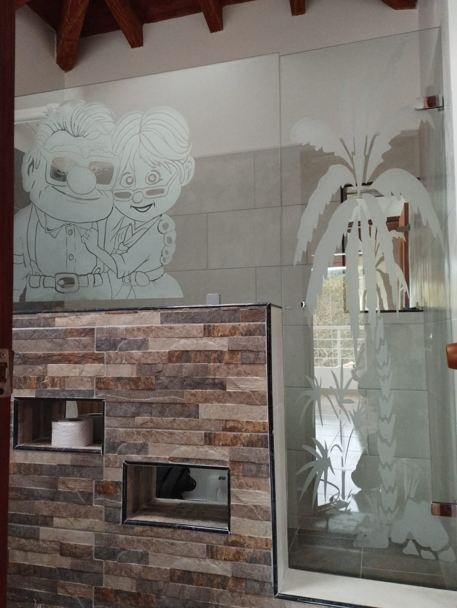

Soluciones arquitectónicas de precisión en vidrio, aluminio y acero inoxidable.

En VITRIALUM DE ORIENTE utilizamos tecnología de corte computarizado y pulido de diamante para garantizar que cada borde sea perfecto. Cada proyecto pasa por un riguroso control de calidad antes de llegar a sus manos.
Ajuste milimétrico para fachadas, divisiones y estructuras.
Resistencia 5 veces superior al vidrio convencional.
Películas de PVB que mantienen la unidad ante roturas.
Desde cabinas de baño hasta fachadas corporativas. Soluciones integrales en vidrio y aluminio.
Divisiones templadas con herrajes en acero inoxidable. Diseño minimalista y máxima durabilidad.
Ver másSistemas de acristalamiento de alta gama para edificios y locales comerciales.
Ver másPasamanos y barandas en acero inoxidable 304. Elegancia estructural y seguridad garantizada.
Ver másSistemas Serie 5020, 744, 8025 y más. Hermeticidad, aislamiento térmico y acústico superior.
Ver másEstructuras en aluminio y vidrio para terrazas y zonas sociales. Funcionalidad y diseño.
Ver másIntegrales en aluminio, madera y vidrio. Diseños personalizados para cada espacio.
Ver másNuestra base de operaciones está en El Carmen de Viboral, pero nuestra logística especializada nos permite llegar con rapidez, precisión y seguridad a toda la región.
Municipios que atendemos
Vehículos acondicionados para el transporte vertical de cristales de gran formato. Entrega sin riesgos directamente en obra.
Fabricación y entrega de vidrio templado optimizados para no retrasar su obra o remodelación. Cumplimos los plazos acordados.
Visitas de medición y consultoría en todos los municipios del Oriente Antioqueño, sin ningún compromiso de contratación.
Herrajes en acero inoxidable 304 con garantía de por vida. Respaldo técnico posventa en cualquier punto de cobertura.
Un asesor experto te espera para darte el mejor presupuesto en el Oriente Antioqueño.